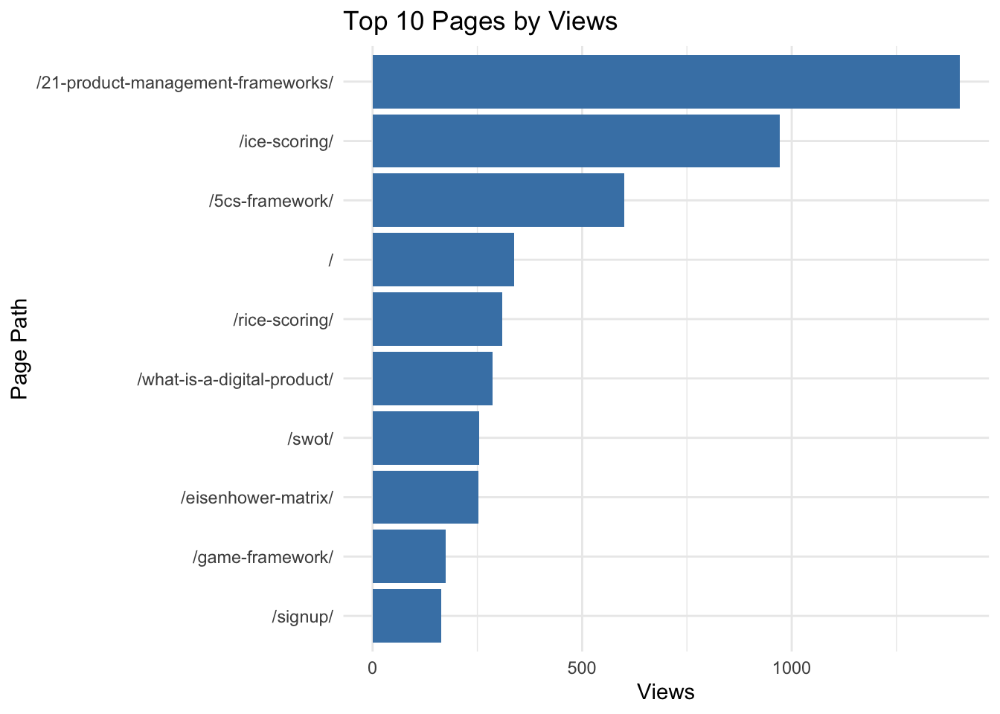
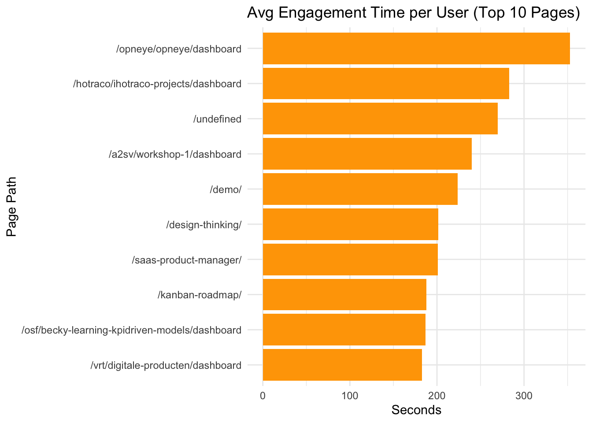
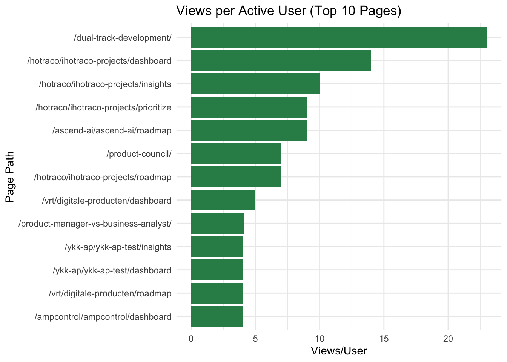

This dashboard includes visual summaries of user activity, event counts, and engagement based on GA4 data from Productfolio.
pageviews |>slice_max(views, n =10) |>ggplot(aes(x =reorder(page_path_and_screen_class, views), y = views)) +geom_col(fill ="steelblue") +coord_flip() +labs(title ="Top 10 Pages by Views", x ="Page Path", y ="Views") +theme_minimal()

pageviews |>slice_max(average_engagement_time_per_active_user, n =10) |>ggplot(aes(x =reorder(page_path_and_screen_class, average_engagement_time_per_active_user), y = average_engagement_time_per_active_user)) +geom_col(fill ="orange") +coord_flip() +labs(title ="Avg Engagement Time per User (Top 10 Pages)", x ="Page Path", y ="Seconds") +theme_minimal()

pageviews |>slice_max(views_per_active_user, n =10) |>ggplot(aes(x =reorder(page_path_and_screen_class, views_per_active_user), y = views_per_active_user)) +geom_col(fill ="seagreen") +coord_flip() +labs(title ="Views per Active User (Top 10 Pages)", x ="Page Path", y ="Views/User") +theme_minimal()

datatable(pageviews, options =list(pageLength =15), caption ="Full Pageview Metrics from GA4")